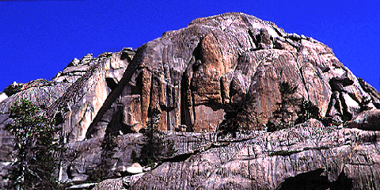

Approach: Take off from
road 7S02 M. Follow cairns to Shuteye Pass. Crocodile Rock is the
beautiful golden-brown Granite block high on the ridge. Aiming
north from the pass find your way to the base, some bushwhacking
required. The quality of the rock is worth the effort.

Leap of Faith 5.8 Two pitches, three bolts, small and
medium-sized CDs. FA: Karen Koerber, Thomas Hartmann (94). Unknown 5.8 ** Two pitches, full rack. Unknown 10b R/X * One pitch, small pro. Brother, My Cup is Empty! 5.9 ** Two pitches, full rack.
FA: Felix Gropp, Thomas Hartmann (6/94). Little Baby Jesus 10d * One pitch, 2 bolts, finger and
hand-sized camming devices. FA: Stephen Ruoss (6/96). Sunday School 10a Crack. One pitch, full rack. FA: Felix
Gropp, Thomas Hartmann (6/94). Easy Living 5.7 Full rack. FA: Felix Gropp, Thomas Hartmann
(6/94).
To the right of Voodoo Child (5.10d) is a monster offwidth. Even
farther to the right of it you will find a clean face with a
prominent waterstreak. Cracks and flakes provide excellent
protection, mostly hand-sized. Both of these climbs are gems and
worth the bushy approach. Brushmaster 5.9- *** Climb one full pitch to a belay with
chains. This is also the belay for a bolted face climb. Amber 5.10a ** Bring 8 slings and a small TCU.
Approach: From the end
of road 7S02K you can see Little Sleep poking through the woods, W
of Big Sleep. You can get to the E face in 20 min., more or less,
depending on your manzanita-avoiding skills. The rock quality is
primo.
Close to the Edge 5.7 One bolt, small TCUs. FA: Inez
Drixelius, Thomas Hartmann (9/2/92). Long Distance Roundabout 5.9+ * One bolt, lots of small
camming devices. FA: Thomas Hartmann (5/27/94). Un Marcheur dans le Ciel 5.11a * Toprope, 50 m. Bat company 5.8 One pitch, CDs. FA: Inez Drixelius, Thomas
Hartmann (9/2/92).
A variation to Thunder Road, after pitch 4: Instead of following
the arch to the right, go out left on a face with two quarter-inch
bolts. The belay bolts are horrible. Pitch 5 is a serious runout
with two bolts. The location is great, but this variation is only
recommended for the adventurous.